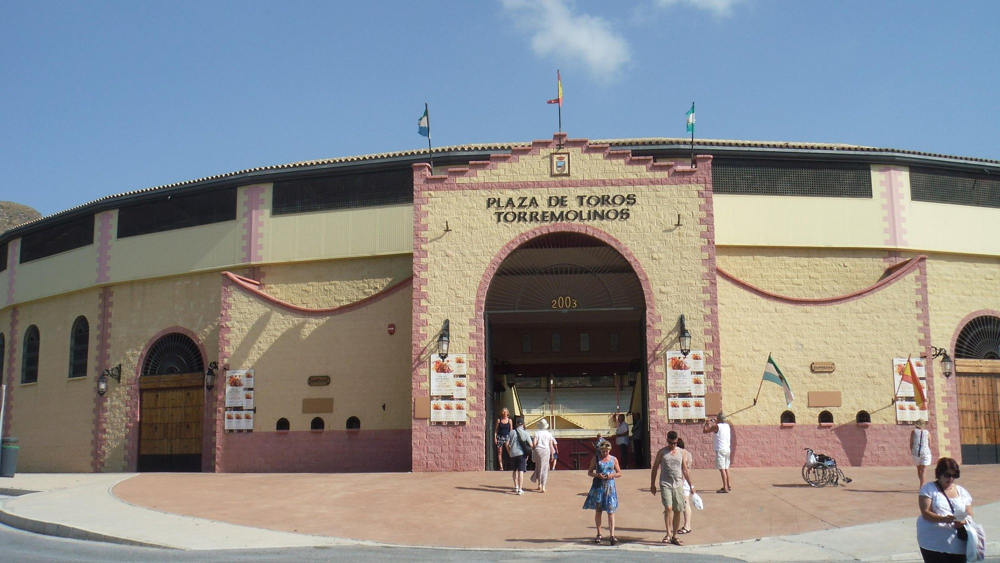
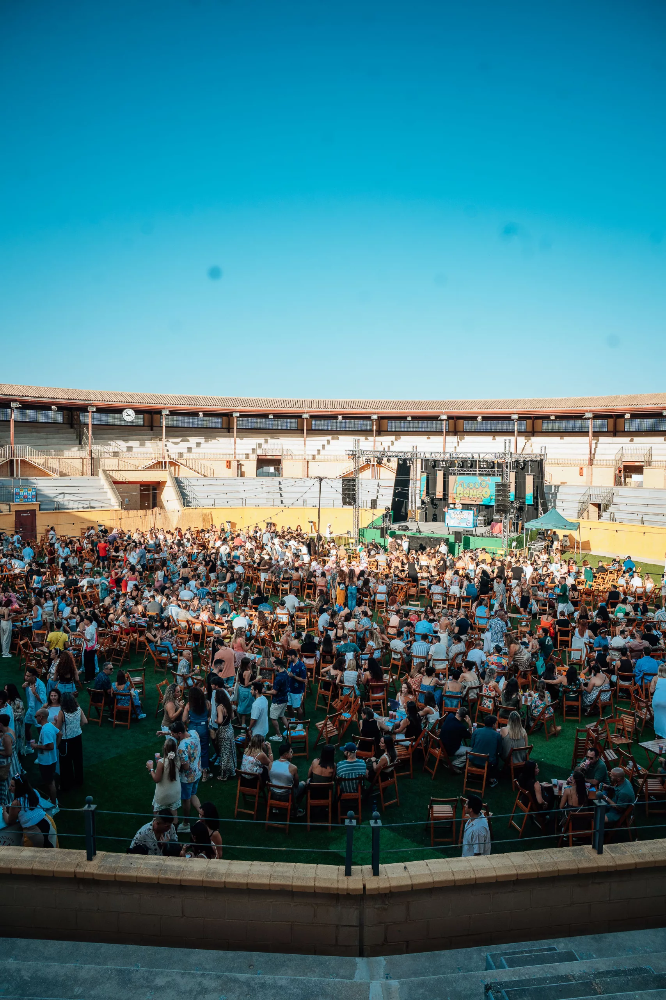
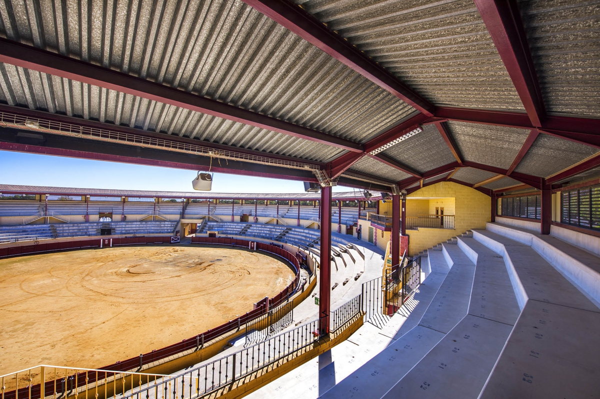

5 curiosidades de la plaza de toros de Torremolinos
Historia, arquitectura y una reinvención sorprendente: los secretos mejor guardados de uno de los espacios más singulares de la Costa del Sol.
18 jun 20265 min de lecturaTorremolinos · Málaga
La plaza de toros de Torremolinos, un espacio con más de veinte años de historia
Hay lugares en la Costa del Sol que cargan con más historia de la que aparentan. La plaza de toros de Torremolinos es uno de ellos. Pasa por delante cualquier día y puede parecerte un edificio más del municipio; pero si te paras a mirarla bien, hay mucho que contar.
Aquí van cinco datos que la mayoría de la gente no sabe sobre uno de los espacios más singulares de Torremolinos.
1. No es la primera plaza de toros de Torremolinos
La plaza actual no es la primera que tuvo el municipio. Una plaza anterior fue inaugurada el 28 de julio de 1968 por los matadores Gregorio Sánchez, Jaime Ostos y Francisco Ceballos, que lidiaron toros de Manuel Navarro. Aquella plaza precedió en décadas a la actual y fue el escenario taurino de Torremolinos durante los años en que la Costa del Sol empezaba a abrirse al turismo internacional. La ciudad que hoy conocemos ya era entonces un referente europeo del sol y la playa, y tenía su plaza de toros.

La fachada de la plaza de toros de Torremolinos
2. Un edificio andaluz-modernista de un arquitecto malagueño
La plaza actual no es un edificio genérico. El coso taurino, de corte andaluz-modernista, fue diseñado por el arquitecto malagueño Ignacio Dorao Orduño. Tiene un diámetro exterior de 76 metros y un ruedo de 45 metros de diámetro. La combinación del modernismo con la arquitectura taurina andaluza tradicional le da un carácter propio que la distingue de muchas otras plazas de la provincia. No es la más grande ni la más antigua, pero tiene una identidad arquitectónica clara y reconocible.
El arquitecto malagueño Ignacio Dorao Orduño, autor del proyecto
3. Se inauguró en 2003 con tres toreros de primera línea
La plaza de toros de Torremolinos fue inaugurada el 4 de septiembre de 2003, con los matadores Javier Conde, Morante de la Puebla y Salvador Vega como protagonistas de aquel primer festejo. Morante de la Puebla, uno de los toreros más mediáticos de las últimas décadas, estuvo presente en el momento fundacional de este coso. La plaza tiene, por tanto, poco más de veinte años: un espacio contemporáneo con la estética de la tradición andaluza.
El ruedo y los tendidos, vacíos
4. Dejó de celebrar corridas en 2015 y se reinventó
Este es quizás el dato más revelador. El uso principal de la plaza fue taurino hasta 2015, año en que dejaron de celebrarse corridas. Desde entonces, su agenda se ha llenado de conciertos, espectáculos y eventos de todo tipo: la plaza dejó de ser un coso taurino activo para convertirse en un espacio de ocio y cultura. Una transformación que refleja el espíritu de Torremolinos, una ciudad que sabe reinventarse sin perder su personalidad. Hoy el ruedo que antes acogía corridas es escenario de festivales.

El ruedo convertido en escenario de conciertos al aire libre
5. Los jueves y domingos la rodea un gran mercadillo
Poco sabe el visitante ocasional que la plaza de toros de Torremolinos no está sola en su entorno. Los jueves y domingos, la zona que la rodea se transforma en un mercadillo popular con más de 200 puestos donde se puede encontrar de todo: ropa, antigüedades, artesanía, objetos de segunda mano y alguna sorpresa inesperada. Es uno de esos planes de mañana que los locales conocen bien y los turistas descubren por casualidad. Si estás en Torremolinos un domingo por la mañana, el mercadillo de la plaza de toros es parada obligatoria.

Los tendidos cubiertos de la plaza, hoy un espacio de ocio
Y este verano, la plaza de toros recibe a Plaza Paraíso
Hay una razón más para acercarse a la plaza de toros de Torremolinos este verano, y es la más grande de todas. Plaza Paraíso elige este espacio único como escenario de uno de los eventos de ocio más especiales de la temporada en la Costa del Sol: un festival que toma el nombre del paraíso que es Torremolinos en verano y lo convierte en experiencia, con música, ambiente y fiesta del 25 de julio al 13 de septiembre.
Cuando un espacio con más de veinte años de vida, que se reinventó para sobrevivir más allá de la tauromaquia, acoge un festival como Plaza Paraíso, el resultado es difícil de encontrar en otro sitio. Es la Costa del Sol en su mejor versión: libre, festiva y con el verano a tope. Echa un vistazo al programa completo o descubre todos los planes del verano en Torremolinos.
Durante todo el verano, el ruedo deja de ser una plaza para convertirse en un espacio idílico al aire libre, pensado al detalle para que cada tarde sea inolvidable.
Food trucksUna selección de food trucks con propuestas para todos los gustos, del picoteo informal a sabores de medio mundo.
Iluminación de veranoGuirnaldas, luces cálidas y ambiente nocturno que envuelven la plaza al caer la tarde.
Decoración temáticaUna ambientación cuidada al detalle que cambia con cada propuesta para sumergirte en el espíritu de cada evento.
Césped artificialZonas chill con césped para sentarte, relajarte y disfrutar del ambiente entre espectáculo y espectáculo.
Fuegos artificialesMomentos mágicos con espectáculos pirotécnicos que iluminan el cielo de la Costa del Sol.
Ambiente únicoBarras, zonas de encuentro y el mejor buen rollo para compartir, descubrir y repetir todo el verano.
Nos vemos en la plaza
¿Te sabes la canción? Demuéstralo
No te pierdas Furor The Show este verano en Torremolinos. Reúne a tu gente, asegura las entradas y vive el concurso musical más divertido en directo.